Questão 1 · verdadeiro ou falso
Kotlin possui null-safety no sistema de tipos e pode interoperar com Java.
História, arquitetura, criação de projeto e Hello World até o contador de cliques
IFSC Android ADS4 — DDM
Professor: Romulo de Aguiar Beninca
Encontro 1 — 03/08/2026 · Lab. INFO 2
De onde o Android veio e como chegou a ser o SO móvel mais usado do mundo.
As camadas que compõem o sistema, do kernel Linux até os apps.
Java ou Kotlin, interface em XML ou Compose, estrutura de pastas.
Hello World, contador de cliques, modo desenvolvedor e ADB.
De uma startup de câmeras digitais ao sistema operacional mais usado do planeta
Com a grande popularidade das câmeras digitais, em 2003 um grupo de desenvolvedores fundou a Android Inc., que pretendia criar um sistema operacional para câmeras.
Fundadores: Andy Rubin, Rich Miner, Nick Sears e Chris White. A empresa usou a biblioteca Bionic (C) e o kernel Linux como base do sistema.
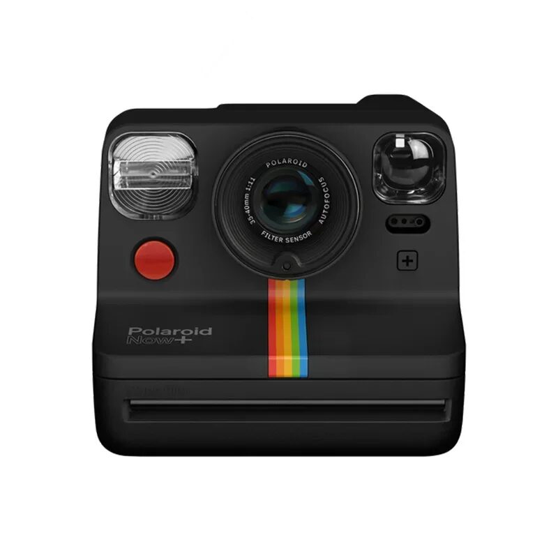
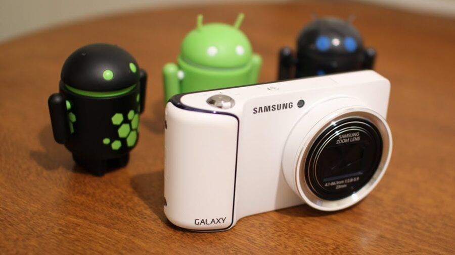
Em 2004, observando o crescimento dos celulares, a Android Inc. mudou o foco para concorrer com os sistemas já existentes:
Android Inc. é fundada (Andy Rubin e equipe), inicialmente pensando em câmeras digitais.
Google compra a Android Inc., ainda sem anunciar publicamente os planos.
Google anuncia a plataforma e forma a Open Handset Alliance — dezenas de fabricantes e operadoras.
Primeiro celular comercial: T-Mobile G1 (HTC Dream), com Android 1.0.
Em 2005 a Android Inc. foi adquirida pelo Google, que manteve quase todos os desenvolvedores em um projeto ambicioso: lançar o Android como uma plataforma aberta e gratuita para dispositivos móveis, flexível o bastante para rodar em qualquer hardware.
Em 2008 foi lançado o T-Mobile G1 (HTC Dream), com design peculiar para os padrões atuais e teclado físico deslizante.
Um grande trunfo da plataforma foi o Android Market — o início do que hoje é a Play Store.
A Apple, que havia lançado o iPhone no final de 2007, não fornecia uma loja de aplicativos — apenas um site para baixar apps da própria Apple.
O Android Market tinha número limitado de aplicações no início, mas ampliou muito as possibilidades de uso do celular.
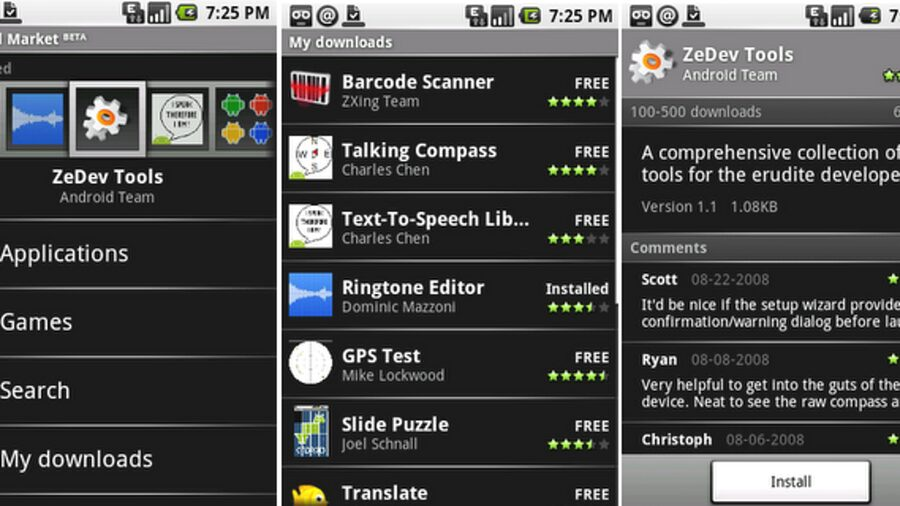
Até o Android 9, cada versão principal ganhava o nome de uma sobremesa, em ordem alfabética.
| Versão | Nome | Ano | Marco |
|---|---|---|---|
| 1.0 | — | 2008 | Primeiro lançamento comercial (G1) |
| 1.5 – 2.3 | Cupcake … Gingerbread | 2009–2010 | Teclado virtual, widgets, multitarefa |
| 4.0 | Ice Cream Sandwich | 2011 | Unifica a interface de celulares e tablets |
| 5.0 | Lollipop | 2014 | Introduz o Material Design e o runtime ART |
| 6.0 | Marshmallow | 2015 | Permissões concedidas em tempo de execução |
| 10 | (nomes de doce descontinuados publicamente) | 2019 | Modo escuro, foco em privacidade |
| 12 | — | 2021 | Material You, temas dinâmicos |
| 13 – 15+ | — | 2022 → hoje | Mais privacidade, IA embarcada, foco em telas grandes |
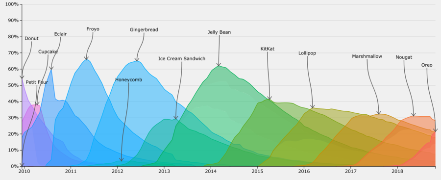
Fonte: landenlabs.com/android/info/os-api-level.html
É o sistema operacional móvel mais usado do mundo, presente em smartphones, tablets, TVs (Android TV), carros (Android Auto) e wearables (Wear OS).
As camadas que transformam um kernel Linux em uma plataforma de apps
Telefone, Contatos, Câmera... e o app que você vai desenvolver.
Activity Manager, View System, Content Providers, Notification Manager — o que você usa direto no código.
ART executa o app; bibliotecas nativas cuidam de SQLite, OpenGL, WebKit, etc.
Traduz chamadas do framework para os drivers reais de câmera, sensores, bluetooth...
Drivers, gerenciamento de memória e processos, segurança, energia.
Como desenvolvedor, você programa quase sempre na camada Java API Framework — as camadas de baixo já vêm prontas no sistema.
Estabilidade e segurança: o Android é baseado no robusto kernel Linux.
Compatibilidade de hardware: o amplo suporte do Linux a diferentes configurações facilita a adoção por uma ampla gama de fabricantes.
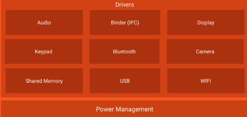
A HAL é a camada que permite ao Android se comunicar com o hardware (câmera, GPS, sensores, Wi-Fi...) de forma padronizada, independente do fabricante.
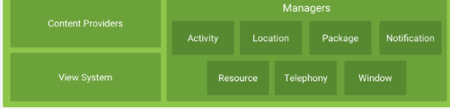
Activity, View e Intent escondem toda a complexidade das camadas de baixo.startActivity(), o pedido atravessa o Framework, passa pela ART, pode acionar o HAL (ex.: abrir a câmera) e, no fim, o Kernel Linux gerencia o processo de verdade.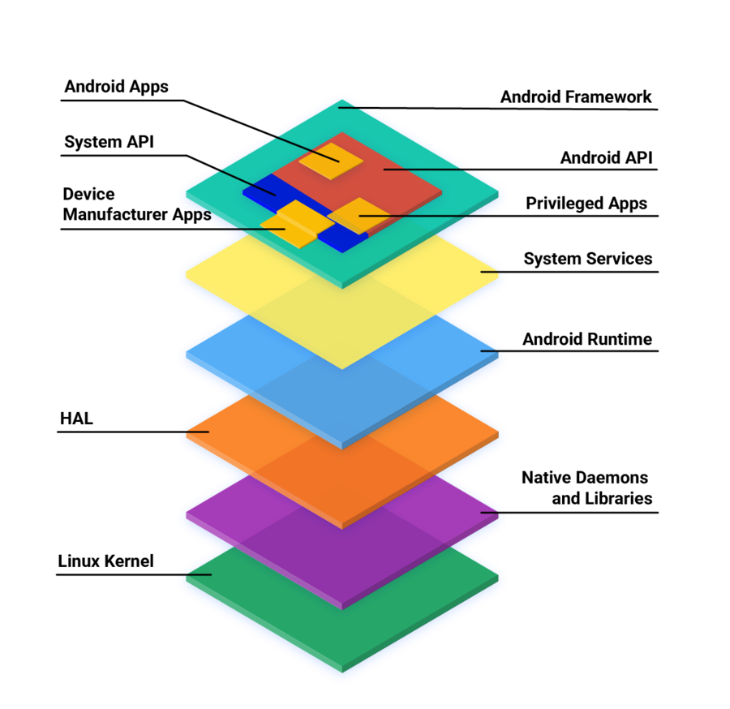
Fonte: source.android.com/docs/core/architecture
Linguagem, interface e a estrutura de pastas do Android Studio
É a IDE oficial para desenvolvimento Android, mantida pelo Google e baseada no IntelliJ IDEA.
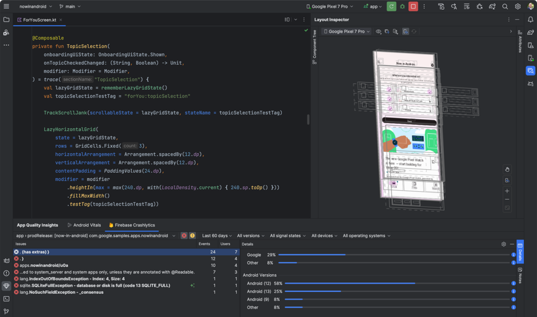
O Android Studio fornece gestão de bibliotecas, ferramenta de emulação, design de interface e depuração — tudo em um só lugar.
O Android SDK é o conjunto de ferramentas do Google para criar apps: compilador, emulador e documentação. O Android Studio é a IDE que reúne tudo isso.
O SDK Manager gerencia as bibliotecas e recursos do SDK, incluindo as diferentes versões da API disponíveis para desenvolvimento e teste.
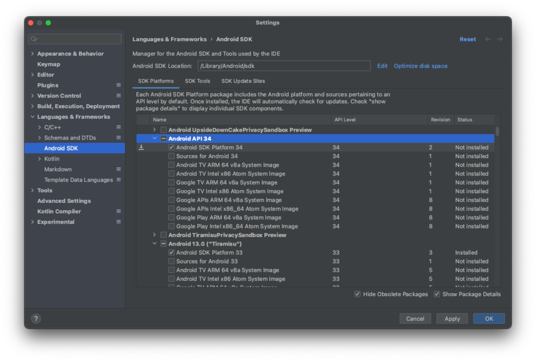
A API do Android é organizada em níveis que correspondem aos recursos disponíveis no sistema — do Ice Cream Sandwich (API 15) ao Android 10 (API 29) e além.
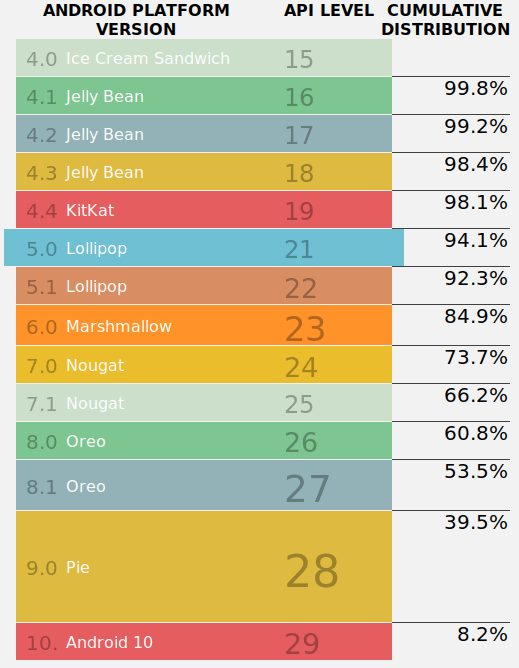
NullPointerException é comumdata class, inferência de tipo, lambdasString?)Nesta disciplina começamos com Java para fixar os fundamentos (ciclo de vida, listeners, XML) — Kotlin fica como evolução natural depois.
.xml, separado do códigofindViewById()setText(), etc.)@Composable, em KotlinNativo, Híbrido/Cross-platform ou PWA — clique em cada categoria para ver as camadas do dispositivo.
Clique em um framework e acompanhe o fluxo de renderização, camada por camada.
| Peça | Papel |
|---|---|
| AndroidManifest.xml | Declara as Activities, permissões, ícone, nome e tema do app — o "cartão de identidade" do aplicativo. |
| XML de layout | Descreve o que aparece na tela: componentes visuais e sua disposição. |
| Código Java/Kotlin | Descreve o comportamento: o que acontece quando o usuário interage. |
Revise as escolhas de linguagem, interface e organização do projeto.
Kotlin possui null-safety no sistema de tipos e pode interoperar com Java.
No sistema tradicional de Views, onde o layout da tela é normalmente descrito?
Qual característica pertence ao Jetpack Compose?
Qual é uma responsabilidade do AndroidManifest.xml?
Em um projeto baseado em Views, onde fica normalmente o arquivo activity_main.xml?
MainActivity.java contém código de comportamento, enquanto textos e cores ficam sob res/.
Da tela padrão do Android Studio a um app que reage ao toque
com.exemplo.meuapp), linguagem Java e Minimum SDK.Trecho do arquivo res/layout/activity_main.xml:
<TextView
android:layout_width="wrap_content"
android:layout_height="wrap_content"
android:text="Hello World!"
app:layout_constraintBottom_toBottomOf="parent"
app:layout_constraintTop_toTopOf="parent"
app:layout_constraintStart_toStartOf="parent"
app:layout_constraintEnd_toEndOf="parent" />Trecho do arquivo MainActivity.java:
public class MainActivity extends AppCompatActivity {
@Override
protected void onCreate(Bundle savedInstanceState) {
super.onCreate(savedInstanceState);
setContentView(R.layout.activity_main); // liga a Activity ao layout XML
}
}Passo 1 — damos um id ao TextView no XML e o associamos ao código com findViewById():
<TextView
android:id="@+id/tvShowContador"
android:layout_width="wrap_content"
android:layout_height="wrap_content" />TextView tvShowContador;
int contador = 0;
@Override
protected void onCreate(Bundle savedInstanceState) {
super.onCreate(savedInstanceState);
setContentView(R.layout.activity_main);
tvShowContador = findViewById(R.id.tvShowContador);
tvShowContador.setText(String.valueOf(contador));
}Passo 2 — um OnClickListener incrementa o contador a cada toque no texto:
tvShowContador.setOnClickListener(v -> {
contador++; // incrementa
tvShowContador.setText(String.valueOf(contador)); // atualiza a tela
});findViewById) e o modelo de eventos do Android (View.OnClickListener) — a base de qualquer interação em tela.Persistir esse valor entre rotações de tela e fechamento do app (onSaveInstanceState, SharedPreferences) é assunto da próxima aula, sobre ciclo de vida da Activity.
Revise a ligação entre o layout XML, a Activity e os eventos de toque.
Qual template foi usado para iniciar o projeto com layout XML?
Qual chamada liga a MainActivity ao arquivo activity_main.xml?
findViewById(R.id.tvShowContador) permite obter no Java a referência do TextView declarado no XML.
Qual atributo cria o identificador usado pelo contador?
O que executa o incremento quando o usuário toca no TextView?
O código apresentado já garante que o contador sobreviva à rotação da tela e ao fechamento do app.
Testando e depurando sem (ou com) um celular de verdade
O Emulador do Android Studio simula um dispositivo Android virtual no computador, permitindo testar e depurar aplicativos sem precisar de um celular físico.
Reproduz fielmente o funcionamento do Android real: tela, botões, sensores, GPS, câmera, chamadas e muito mais.
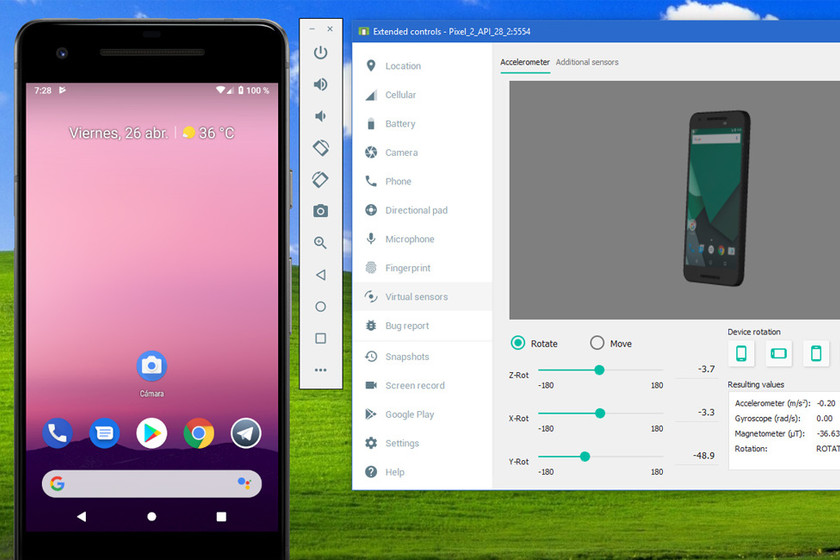
Embora o Android seja um sistema operacional Linux, o acesso a recursos do sistema deve sempre passar pelas políticas e permissões da plataforma Android.
Por isso, para acessar remotamente o dispositivo não usamos SSH, e sim uma aplicação própria: o ADB.
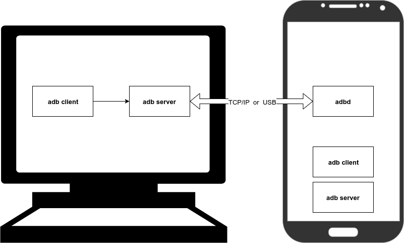
O ADB (Android Debug Bridge) é uma ferramenta versátil de linha de comando, incluída no Android SDK, que permite a desenvolvedores e usuários comunicarem-se com um dispositivo Android a partir de um computador.
Três componentes: ADB Daemon (adbd) no aparelho, ADB Server no computador (fica escutando na porta TCP 5037) e o Client — o comando adb que você digita no terminal.
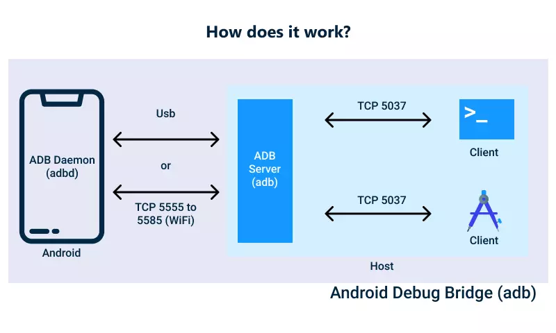
Fonte: developer.android.com/studio/command-line/adb
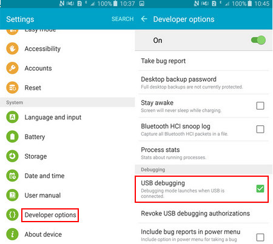
No diretório onde está instalado o SDK e as ferramentas de plataforma (~/Android/Sdk/platform-tools), execute ./adb devices para listar os dispositivos com ADB habilitado:
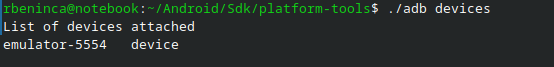
| Comando | Função |
|---|---|
adb logcat | Exibe os logs do sistema Android em tempo real (útil para depuração) |
adb shell | Abre um terminal (shell) dentro do sistema Android |
adb install meu_app.apk | Instala o arquivo APK no dispositivo conectado |
adb push arquivo.txt /sdcard/ | Envia o arquivo do computador para o armazenamento interno do Android |
adb pull /sdcard/arquivo.txt . | Copia um arquivo do Android para o computador local |
adb reboot | Reinicia o dispositivo conectado |
Foco em manipulação de arquivos (push/pull/shell) — mostra a comunicação entre o PC e o emulador.
Com o emulador rodando, abra o terminal e siga os passos:
echo "Teste ADB" > teste.txtadb push teste.txt /sdcard/adb shellls /sdcard/ (depois exit para sair)adb pull /sdcard/teste.txt teste_recebido.txtFoco em diagnóstico — observando o fluxo de logs do sistema em tempo real.
adb devicesadb logcatCtrl+C para parar o log.adb shell e explore as pastas com ls. (exit para voltar).| Emulador (AVD) | Dispositivo físico | |
|---|---|---|
| Configuração | Device Manager do Android Studio, sem hardware extra | Modo desenvolvedor + Depuração USB |
| Desempenho | Mais lento, depende da máquina | Desempenho real do aparelho |
| Sensores/Câmera | Simulados | Reais |
| Uso recomendado | Testes rápidos e múltiplas versões de Android | Validação final e recursos de hardware |
Revise conexão, diagnóstico e transferência de arquivos com dispositivos Android.
Quais são os três componentes da arquitetura ADB?
Qual comando lista os dispositivos reconhecidos pelo ADB?
adb logcat exibe logs do sistema Android em tempo real.
Qual comando envia um arquivo do computador para o Android?
Além de ativar a depuração USB, o que deve ser autorizado no celular ao conectar um novo computador?
O AVD facilita testes em várias versões do Android, enquanto o aparelho físico valida desempenho e sensores reais.
findViewById./strong>
Activities, layouts e ciclo de vida
Traga o app do contador pronto — vamos usá-lo para observar o ciclo de vida da Activity na prática.